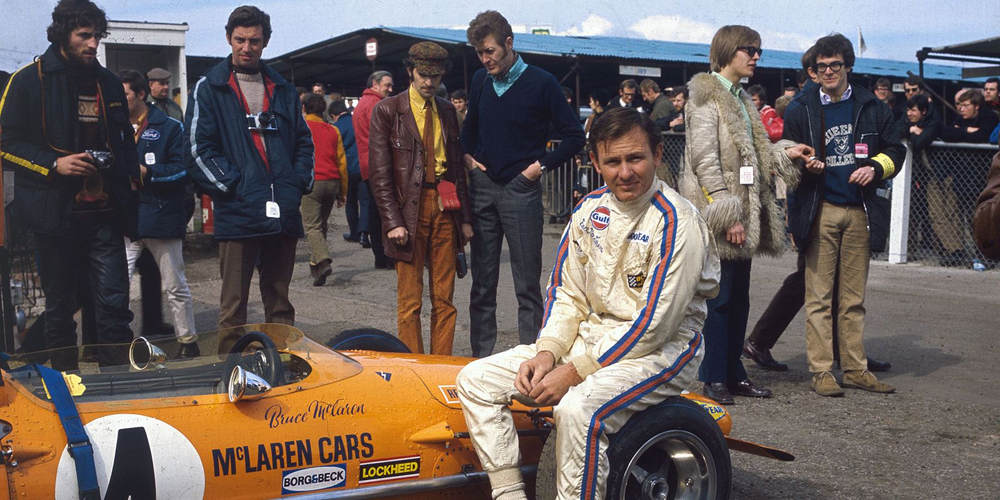
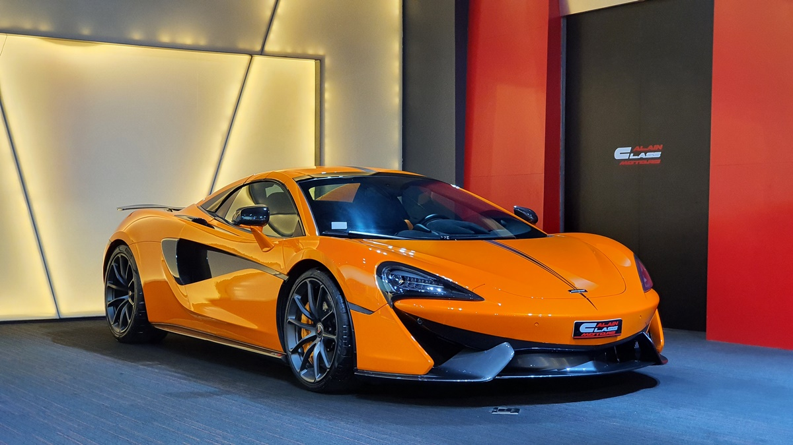

| Das Unternehmen | |
|---|---|
| McLaren Automotive beschäftigt heute über 2.300 Mitarbeiter. Mit einem vielfältigen Produktportfolio und mehr Kunden, die die maßgeschneiderte Abteilung McLaren Special Operations der Marke nutzen, trug McLaren Automotive 2018 einen wesentlichen Teil zum Gesamtumsatz der McLaren Group von 1,2 Milliarden Pfund bei. |

|
| The Creator | |
|---|---|
|  | Bruce McLaren war das zweite von drei Kindern. Sein Vater war Kfz-Handwerker mit eigener Werkstatt und fuhr wie auch seine drei Brüder Motorradrennen, sodass das Interesse des Jungen am Motorsport früh geweckt wurde. Die Karriere von McLaren verlief in einem immensen Tempo. Unterstützt von seinem Vater, in dessen Werkstatt er an Fahrzeugen mitarbeitete, fuhr er mit 15 Jahren erste Rennen in Neuseeland. Hier wurde auch der Australier Jack Brabham auf ihn aufmerksam, der ihn 1958 ins Cooper-Werksteam holte. 1966 stieg er bei Cooper aus und gründete seinen eigenen Formel-1-Rennstall. In den Anfängen des McLaren-Teams fuhr er ohne Teamkollegen. Bei einer Testfahrt in einem CanAm-McLaren in Goodwood verunglückte er am 2. Juni 1970 tödlich. |
| McLaren Automotive | |
|---|---|
| McLaren Automotive ging 1989 aus dem Rennstall McLaren Racing als McLaren Cars hervor. Das erste Projekt war der von 1993 bis 1997 produzierte F1 mit einem Zwölfzylindermotor der BMW Motorsport GmbH. Von 2003 bis 2009 wurde in Kooperation mit Mercedes-Benz der SLR McLaren in den Werken in Portsmouth und Woking hergestellt. Im September 2009 wurde die Eigenentwicklung MP4-12C und im April 2014 das auf dem 12C basierende Modell 650S vorgestellt, der das erste Modell der neu gegründeten Super Series wurde. Seit dem MP4-12C werden die V6 und V8-Motoren bei Ricardo gefertigt. 2015 wurde das erste Modell der Sports Series, der 570S vorgestellt, der als Einstiegsmodell unterhalb des 650S positioniert ist. Im selben Jahr kam der 675LT auf den Markt. Er ist ein weiteres Modell der Super Series und basiert auf dem 650S. Coupé als auch Spider sind auf jeweils 500 Exemplare limitiert. |  |